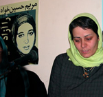

پذيرش > اخبار > تغییر قوانین ارث، دیه و تابعیت زنان در دستور کارمجلس قرار گرفت/ محبوبه حسین (...)


 تغییر قوانین ارث، دیه و تابعیت زنان در دستور کارمجلس قرار گرفت/ محبوبه حسین زاده تغییر قوانین ارث، دیه و تابعیت زنان در دستور کارمجلس قرار گرفت/ محبوبه حسین زاده
25 آذر 1386 - - نسخه قابل چاپ
قوانين مربوط به ارث، ديه و تابعيت مادري در مجلس شوراي اسلامي مورد بازنگری و تغییر قرار می گیرند و طرح نحوه ارثبري زن از اموال غيرمنقول همسر با قيد دو فوريت اين هفته تقديم هيات رييسه مجلس ميشود.
عضو فراكسيون زنان مجلس شوراي اسلامي به اعتماد گفت:« زنان نماينده مجلس ديداري با مقام رهبري داشتيم كه به طرح مسائل مربوط به قانون مدني در مورد حقوق زنان اختصاص داشت. پيش از آن هم ايشان ديداري با زنان نخبه داشتند و در آن جلسه مطرح كرده بودند كه برخي مسائل که در فقه در باب احکام زنان وجود دارد سخن آخر نيست بلکه ممکن است با تحقيق يک فقيه ماهر و مسلط به مباني و متد فقاهت نکات جديدي استنباط شود. ما هم در جلسه اي كه با ايشان داشتيم مواردي را مطرح كرديم.»
الهام امین زاده ادامه داد:« نظر مقام رهبري بر اين است كه زنان هم از عرصه و هم از اعياني از اموال شوهرشان ارث ببرند. و چون تا فتاوي تبديل به قانون نشوند، امكان عملياتي شدن آن وجود ندارد، طبق نظرات مقام رهبري تصميم گرفتيم تغييراتي در قانون مدني مرتبط با ارث زنان از شوهر انجام دهيم.»
پيش از اين نيز فاطمه رهبر، ديگر نماينده مجلس شوراي اسلامي از تغيير برخي از قانون مواد مدني از جمله ارث زن از شوهر خبر داده بود: « با پيگيري هاي مجلس شوراي اسلامي متوجه شديم که برخي از مسائلي که در دادگاه هاي خانواده وجود دارد به دليل قوانين مدني است که بايد با توجه به شرايط اجتماعي، اصلاح شوند. به همين دليل اين موارد را با کميته فرهنگي- اجتماعي زنان مطرح کرديم و اکنون پس از آماده سازي اين موارد قصد داريم به زودي آن را به بالاترين مراجع نظام و مراجع عظام ارائه کنيم و اميدواريم بتوانيم با نظر ايشان، برخي موارد قانون مدني را که برگرفته از احکام ثانويه هستند، تغيير دهيم.»
فاطمه رهبر گفته بود:« طبق قانون مدني ايران، زن فقط به ميزان يک هشتم از اموال شوهر آن هم از بنا و ساختمان ارث مي برد و اين مورد شامل زمين نمي شود. اما در شهرهاي شمالي و روستاهاي کشور زنان سال هاي زيادي را همراه شوهران شان روي همين زمين ها کار مي کنند و همه درآمدشان را هم صرف توسعه زميني مي کنند که از آن ارثي نمي برند.»
رييس فراكسيون زنان مجلس شوراي اسلامي نيز در مورد طرح نحوه ارثبري زن از اموال غيرمنقول همسر گفت:« فراكسيون زنان مجلس براساس فتواي برخي از مراجع عظام تقليد كه زنان ميتوانند از كل اموال غيرمنقول همسر خود ارث برند، اين طرح را تهيه كرده است كه اين هفته تقديم هيات رئيسه مجلس مي شود.»
فاطمه آليا افزود:« تاكنون طبق قانون مدني مطابق فتواي مشهور فقها زن از اموال غيرمنقول شوهر ارثي نميبرد اما با تصويب اين طرح، زنان مي توانند از عقار هم ارث ببرند.»
آيت الله صانعي از مراجع تقليد نيز پيش از اين درمورد ارث زن از شوهر گفته بودند:« اکنون ديگر منقول ها ارزشي ندارند و سبب مي شود که نصف جمعيت ما از حقوق شان محروم شوند. نظر من اين است كه زن از تمام اموال شوهر اعم از زمين و غيرزمين ارث مي برد.»
در جلسه زنان نماينده مجلس شوراي اسلامي با مقام رهبري، موارد ديگري هم مطرح شده است. امين زاده به اعتماد مي گويد:« در اين جلسه، بحث تابعيت مادري هم مطرح شد و مشكلات مربوط به زندگي اين زنان را خدمت ايشان مطرح كرديم.»
وي ادامه داد:« اتباع افغان و عراقي كه با زنان ايراني ازدواج كرده اند، براي اشتغال در ايران با مشكل روبرو هستند. چون آنان بايد ايران را ترك كنند و در اين صورت بنيان خانواده زنان ايراني كه با اين مردان ازدواج كرده اند، متزلزل مي شود. از سوي ديگر اين زنان زندگي بسيار سختي را تحمل مي كنند و همان طور كه مي دانيد هم اكنون حدود سي هزار كودك حاصل از ازدواج زنان ايراني و اتباع بيگانه در بلاتكليفي به سر مي برند. به همين دليل براي اين كه مشكل اين زنان و كودكان آنها حل شود در جلسه با مقام معظم رهبري، بحث تابعيت فرزندان زنان ايراني را مطرح كرديم كه البته فرصتي براي طرح جدي قضيه باقي نماند اما پيگير اين موضوع هستيم.»
برابری دیه زن و مرد هم موضوع دیگری است که در جلسه زنان مجلس با رهبر مطرح شده است. امین زاده گفت:« پس از طرح این موضوع در جلسه، فراکسیون زنان مجلس مساله تغییر دیه زنان را دنیال می کند. هم اکنون عده ای عقیده دارند که همین قانون خوب است و عده ای دیگر خواستار تساوی کامل دیه زن و مرد هستن. به همین دلیل راه وسطی پیشنهاد شده است و در حال کار بر آن هستیم که دیه زنان سرپرست خانوار با مردان یکی شود.»
وی در پاسخ به این سوال که برابری دیه توسط بالاترین مقامات نظام مطرح شده بود و حالا که بحث تغییر مطرح است، چرا نباید دیه همه زنان با مردان برابر شود، گفت:« هنوز در حال انجام کار تحقیقاتی هستیم و مسلما برابری دیه زنان سرپرست خانوار، گام اول است و کلیه موارد را برای برابری دیه زن و مرد در نظر می گیریم.»
پیش از این بحث برابری دیه زن و مرد توسط رئیس مجمع تشخیص مصلحت نظام مطرح شده بود. هاشمی رفسنجانی در دیدار با زنان اصولگرا موافقت خود با برابری ديه زن و مرد را اعلام کرده بود:« نمايندگان مجلس مي توانند برابري ديه زن و مرد را به صورت طرح ارائه کنند. اگر مجلس هفتم آن را تصويب کرد، افتخار است. اما اگر مجلس تصويب نکرد يا شوراي نگهبان آن را رد کرد، ما در مجمع مي توانيم در اين زمينه اقدام کنيم.»
رفسنجاني با تاکيد بر اينکه اصلاح موادي از قانون مدني که زنان ايراني را با پاره يي از مشکلات روبه رو کرده، ضروري است، گفته بود:« در حال حاضر عدم تطابق برخي قوانين با شرايط زماني احساس مي شود.»
آیت الله صانعی، یک هفته پس از طرح برابری دیه زن و مرد توسط هاشمی رفسنجانی با استقبال از این طرح گفت:« همه وظیفه داریم نسبت به دفاع از حقوق زن ها و حقوق همه انسان ها تلاش کنیم.» صانعی در پایان درس خارج فقه در مدرسه فیضیه اظهار امیدواری کرد:« روحانیون و دانشگاهیان با انجام کارهای مطالعاتی و تحقیقاتی و نمایندگان مجلس هم از طریق قانون گذاری در جهت تصویب قانون برابری دیه زن و مرد اقدام کنند و رفته رفته بسیاری از این مسائل و مشکلات حل می شود.»
ایشان همچنین در فتوایی صریح اعلام کرده است:« ديه زن و مرد برابر است». آيت الله صانعي در سايت رسمي خود در اين باره مي نويسد: «از نظر فقهي معتقدم ديه زن و مرد مسلمان برابر است و مقدس اردبيلي - قدس سره- هم وقتي به اين بحث مي رسد با تمام قداستش و فقهش مي فرمايد؛ «من به روايتي دست نيافتم که ديه زن را نصف ديه مرد بداند». بنده هم در اين مورد نوشتم و تعجب کردم از اينکه مقدس اردبيلي - قدس سره- چرا اين طور مي گويد، اما در سال بعد و پس از مطالعه بيشتر گفتم حق با ايشان است و ديه زن و مرد را مساوي دانستم.»
در همین حال آیت الهه موسوی بجنوردي، نيز تاکید می کند:« امروزه زن فعاليت اقتصادي دارد و شايد بتوان گفت که نفقه اش با مرد نيست و ديه آنها مساوي است.»
هاشمی شاهرودی، رئیس قوه قضائیه نیز در همایش حقوق شهروندی با تاکید بر لزوم برابری دیه زن و مرد تاکید کرد:« بايد تلاش کنيم حقوق زن را در يک خانواده و در جامعه اسلامي به همراه حقوق فرزندان، مطابق با اصول و مباني حقوق اسلامي برآورده کنيم.»
ارسال به
بالاترین
،
توییتر
،
فریندفید
،
فیسبوک
در همين بخش :
 پروین ذبیحی برنده جایزه حقوق بشری سازمان غيردولتى اتريشى سودويند شد پروین ذبیحی برنده جایزه حقوق بشری سازمان غيردولتى اتريشى سودويند شد
پخش کارت پستال و بروشور در روز جهانی زن در تهران
تمدید زمان برای امضای بیانیهی جمعی از فعالان زن به مناسبت هشت مارس
مجوزی که در نطفه خفه شد
بیش از 2000 امضا در اعتراض به تبعیض های آموزشی به مجلس تحویل داده شد
ديگر بخش ها :
طرح یک میلیون امضا
|
مقالات
|
سایت نوشته ها
|
اخبار
|
گزارش كمپين
|
گفت و گو
|
علیه سکوت
|
كوچه به كوچه
|
نامه های شما
|
گزارش ویژه
|
گفتگو با اعضا
|
ویژه سالگرد کمپین
|
تصویر برابری
|
دل آرام علی
|
تریبون
|
مقالات
|
تاریخ شفاهی
|
خارج از چارچوب
|
کتابخانه
|
درباره کمپین
|
کمپین در شهرها
|
کمپین در بند
|
صدای تغییر
|
ویژه 22 خرداد
|
لایحه حمایت از خانواده
|
گالری
|
عشا مومنی
|
امیر یعقوبعلی
|
خدیجه مقدم
|
راحله عسگری زاده و نسیم خسروی
|
پروین اردلان،جلوه جواهری، مریم حسین خواه، ناهید کشاورز
|
زینب پیغمبرزاده
|
سعیده امین، سارا ایمانیان، محبوبه حسین زاده، ناهید کشاورز و همایون نامی
|
احترام شادفر
|
نسیم سرابندی زاده،فاطمه دهدشتی
|
وبلاگ مهمان
|
پرونده خرم آباد
|
دستگیری ها
|
مریم مالک
|
پرستو اللهیاری
|
مهرنوش اعتمادی
|
سمیه رشیدی
|
Other Languages
|
همراهان
|
«فراخوان کمپین ده روز با بهاره هدایت»
| English
|